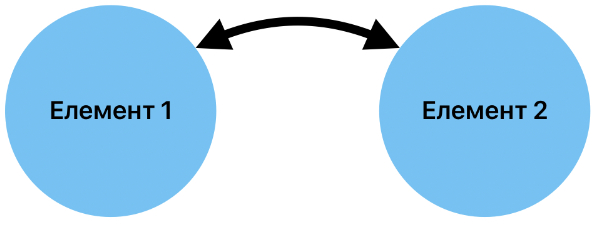
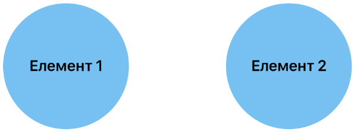
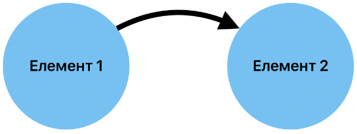
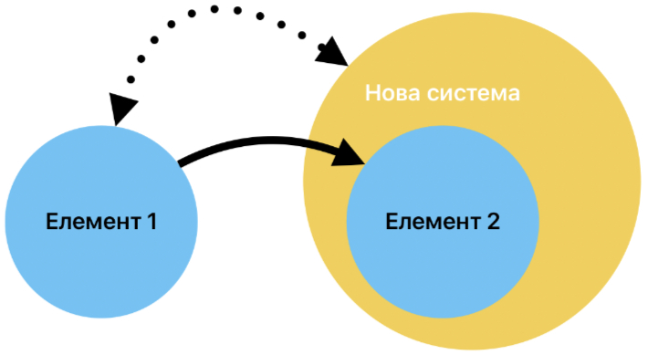
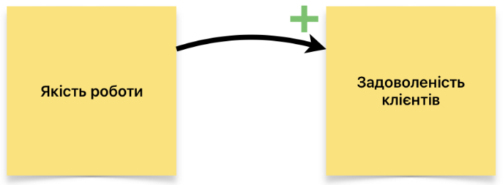
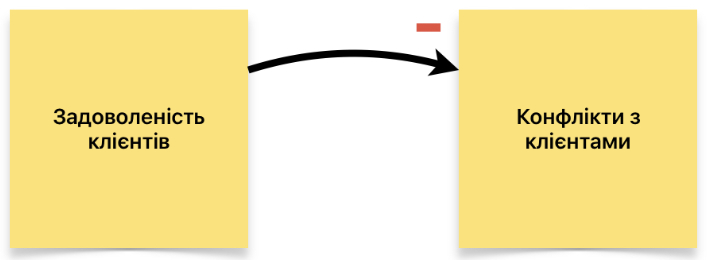
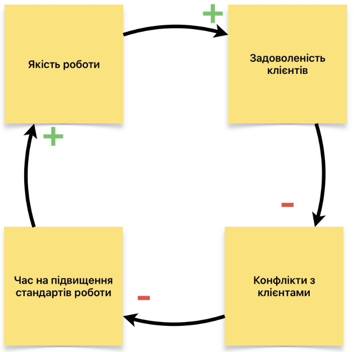
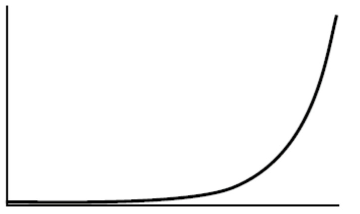
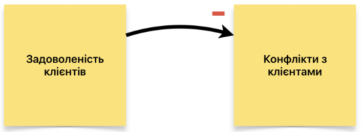
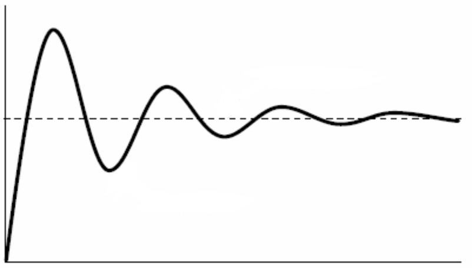

🥑 Система — набір елементів, зв‘язків між ними і мета, заради якої вони будують зв’язки. В процесі взаємодії і руху до мети вони отримують нові властивості, не притаманні цим елементам у відриві від системи.
🧠 Мислення — здатність мозку сприймати, обробляти і передавати інформацію.
🌿 Системне мислення — цілісне сприйняття предметів і явищ, з огляду на їхні зв‘язки. Тобто оцінка системи як цілого, а не набору елементів.
В бізнесі системне мислення необхідне для того, щоб:
— зрозуміти реальну мету існування системи
— співставити з бажаною метою
— знайти кореневі елементи і обрати важелі впливу на них
— відкоригувати систему, щоб вона якнайефективніше йшла до бажаної мети
🚩 Мету і нові властивості (емерджентність) неможливо побачити в окремих елементах, тільки коли вся сукупність взаємодіє. Тому системне мислення існує як окремий напрямок мислення.
Взаємозв’язок між елементами — це обмін цінностями (інформацією). Якщо елементи не бачать взаємної цінності, обмін не відбувається. Коли ці елементи не впливають один на одного напряму, вони не знаходяться в одній системі.

Взаємозв’язок між елементами — це обмін цінностями (інформацією). Якщо елементи не бачать взаємної цінності, обмін не відбувається. Коли ці елементи не впливають один на одного напряму, вони не знаходяться в одній системі.

Коли тільки один з елементів впливає на інший, елементи знаходяться в надсистемі і підсистемі.

Якщо не існує взаємозв’язку, вплив неможливий. Але це протирічить принципу системного мислення, адже все пов’язано зі всім.
Якщо ми не можемо впливати, ми знаходимося в статусі об’єкта. Об’єкти не існують в системі, вони знаходяться нижче в ієрархії, тобто в підсистемі.
Статус об’єкта характеризується тим, що ми сприймаємо вплив системи як даність і підлаштовуємося під її забаганки. Або не маємо меті існування в цій системі — і тоді цілеспрямовано не вступаємо з нею в контакт.
Якщо все-таки існує бажана мета, треба набути нових можливостей, які дозволять створити взаємозв’язок. Тобто створювати цінність елементу системи, на яку ми хочемо вплинути.

Системи найпростіше розуміти через ланцюг причинно-наслідкових зв‘язків. Кожен причинно-наслідковий зв‘язок буває або підсилюючим, або балансуючим.
Підсилюючий зв’язок (+) вказує, що при збільшенні причини збільшується наслідок і навпаки, при зменшенні причини зменшується наслідок.

Якщо якість роботи росте, зростає задоволеність клієнтів.
При падінні якості, зменшується задоволеність.
Балансуючий зв’язок (–) вказує, що при збільшенні причини зменшується наслідок і навпаки, при зменшенні причини збільшується наслідок.

Якщо задоволеність клієнтів росте, конфліктів меншає.
Якщо задоволеність падає, конфліктів стає більше.
Система працює циклами, бо в теорії систем все пов‘язано з усім. Це означає, що треба відшукати всі причинно-наслідкові зв’язки, які логічно зациклюються. Повне проходження по циклу — зворотній зв‘язок.

Коли знайдено цикл, треба зрозуміти, чи він підсилюючий, чи балансуючий. Це аріфметична операція з перемноження всіх знаків причинно-наслідкових зв‘язків. Щоб логіка відповідала арифметиці, до кожного знаку додаємо цифру 1.
+1 × -1 × -1 × +1 = +1
Якщо в результаті маємо +1, цей цикл підсилюючий. Якщо -1, цикл балансуючий.
Підсилюючий цикл
Підсилюючий цикл буває двох типів: розквітом або пороком. Якщо в прикладі вище система націлена на зростання якості, і зараз вона зростає, це розквіт. Якщо ж, навпаки, падає через зростання кількості конфліктів, це вада.
Якщо цикл характеризується розквітом, система йде до бажаного стану, і — якщо не існує зовнішніх факторів впливу, — якість буде постійно зростати.
Якщо цикл порочний (система віддаляється від мети), необхідно шукати важелі впливу, які треба додати в набір причинно-наслідкових зв’язків. Це втручання є проявом суб’єктності.
Якщо не втручатися, накопичення ефекту будуватиметься по експоненті.

Балансуючий цикл
Будується на постійному направленню до планового показника і швидкістю реакції на змін стану. Як правило, баланс не досягається, а постійно відбувається коливання вище і нижче рівня повного балансу через наявність затримки між реакцією на стан і діями.

Проявляється тим, що стан системи, якщо в нього не втручатися, завжди наближається до однієї точки, а коливання з часом зменшуються.

🌍 Все пов’язано з усім. Кількість елементів і циклів нескінченна. Щоб системне мислення працювало ефективно, ми маємо спрощувати до рівня, де залишаються тільки важливі елементи і зв’язки.
🚧 Границі визначаються тим, наскільки цілісно ми можемо осягнути систему. Якщо в осягнутих границях ми не маємо впливу, ми є об’єктом. Треба або звужувати межі, або розвиватися і шукати, як отримати суб’єктність.
🤯 Системне мислення — це складно. Не завжди нам вдається відразу вибудувати всі причинно-наслідкові зв’язки і зрозуміти межі системи, де можна вплинути на рух до мети.
🚩 Щоб системне мислення працювало, доводиться малювати діаграми, перемальовувати, вносити уточнення і корективи. Замінювати назви елементів, шукати, що іще виступає причинами і які ще існують наслідки.
Городніков Олександр